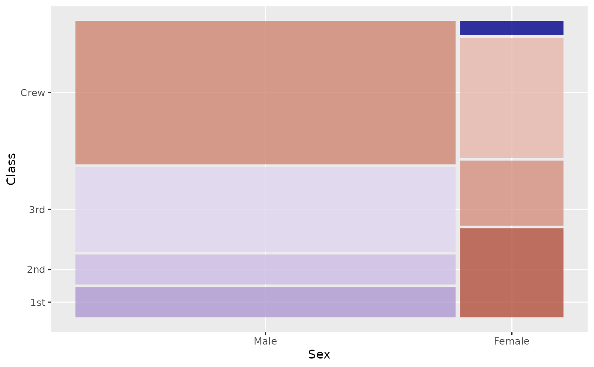
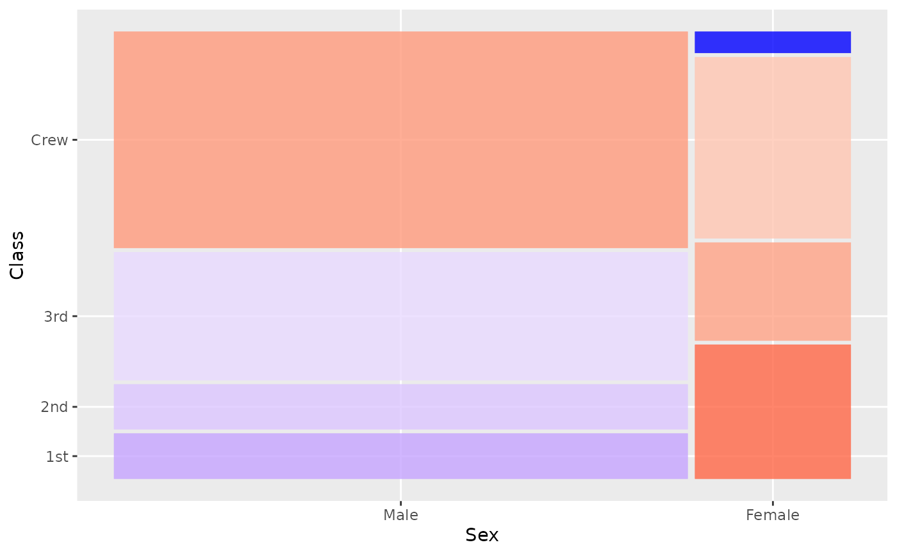
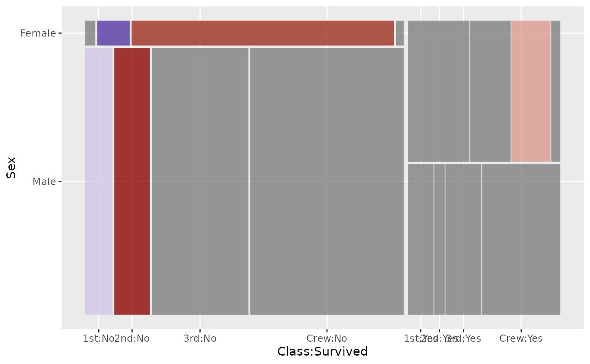

Provides a red-white-blue color scale centered at 0 for visualizing
Pearson residuals from loglinear models. Designed for use with
geom_mosaic() when expected parameter is specified.
Usage
scale_fill_residual(
...,
low = "darkred",
mid = "white",
high = "darkblue",
midpoint = 0,
limits = NULL,
name = "Pearson\nResidual"
)
scale_fill_residuals(
...,
low = "darkred",
mid = "white",
high = "darkblue",
midpoint = 0,
limits = NULL,
name = "Pearson\nResidual"
)Arguments
- ...
Arguments passed to
scale_fill_gradient2- low
Color for negative residuals (default: "darkred")
- mid
Color for zero residuals (default: "white")
- high
Color for positive residuals (default: "darkblue")
- midpoint
Center point for color scale (default: 0)
- limits
Range used for the color gradient. Values beyond supplied limits receive the corresponding endpoint color.
- name
Legend title
Details
The default legend always labels -4, 0, and 4. It also labels
supplied limits and the observed minimum and maximum when those differ
from the limits. The legend extends to every labelled value, with solid
endpoint color beyond supplied limits. When the contributing mosaic cells
have outlines, positive residuals have a solid dark blue outline, negative
residuals have a dashed dark red outline, and an unoutlined midpoint band
(white by default) separates them at zero. Setting colour = NA on every
contributing mosaic layer removes these outlines from both the cells and
the legend. Black ticks are drawn outside the color bar, which stretches
with the mosaic panel. Nearby vertical labels are separated, and a thin
elbow connects each displaced label to its exact tick. The neighbouring
label uses a longer straight tick so nearby text shares a common alignment.
Automatically generated numeric labels are rounded to one decimal place.
The legend can be hidden normally with
theme(legend.position = "none").
Examples
data(titanic)
# Independence model with residual shading
ggplot(data = titanic) +
geom_mosaic(aes(x = product(Class, Sex)), expected = "independence") +
scale_fill_residual()

# Custom colors
ggplot(data = titanic) +
geom_mosaic(aes(x = product(Class, Sex)), expected = "independence") +
scale_fill_residual(low = "red", high = "blue")

# Custom limits to highlight strong deviations
ggplot(data = titanic) +
geom_mosaic(aes(x = product(Class, Sex, Survived)),
expected = ~ Class + Sex) +
scale_fill_residual(limits = c(-4, 4))
